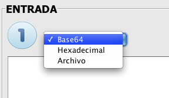
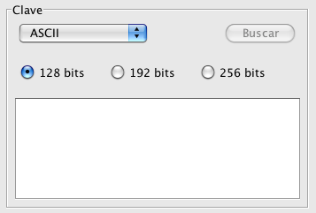

AESphere decryption process
The decryption process is clearly separated in three simple steps.
 Input and key.
Input and key.
When choosing the input we have three options: base64, Hexadecimal and File

- If we choose the base64 option, the text area is enabled to enter a ciphertext as input. This text must be the result of the encryption process, because the program will check this and, if it is not a ciphertext, the application will detect that and will warn the user about it.
- The same verification is performed when the input is hexadecimal of fiel. By selecting hexadecimal, the application will only allow the entering of hexadecimal digits and by selecting the option "File", a button is enabled to browse for an encrypted file or a text file with an ecrypted text.

As for the key, we also have three options: ASCII text, Hexadecimal and File (base64).
We have to choose the size that the key will have: 128, 192 or 256 bits. Depending on this size the decryption process will have more or less rounds: 10, 12 or 14 respectively.
Obviously, if we want the decryption to return the expected result, que have to coose the same key that we used in the encryption (the application will not allow keys longer than the size selected).
 Output.
Output.
Once the input and the key have been chosen, we have to select the output format of the decryption process.
The options for the output are ASCII, Hexadecimal and File. The format in which the program will give the output depends on the user selection. The option "File" enables a text field to write the path of the decrypted file and a button in case that we want to browse for the file.

 Advanced Options.
Advanced Options.
Finally, we have to choose the encryption method and the execution mode.

In the encryption method (as in the key), we have to choose the same option as the one that we in the encryption, or so the result will not be the expected one. By choosing the CBC method, the check box for entering the initialization vector manually is enabled. If we select it, a window, prior to the decryption process, will ask us to enter the initialization vector.
From the "File" menu we can load and save keys, and from the menu "Edit" we can copy and paste the fields that we need.

The application will check that all fields have been filled in before continuing and will inform the user in case that any of the fields is empty or has a wrong value.
By pressing the "Cancel" button we will return to the main window of the application.
For a more detailed and theoric information of this process, please see:
Decryption,Encryption, AddRoundKey, MixColumns, ShiftRows, SubBytes, Base64, ECB, CBC, Padding.